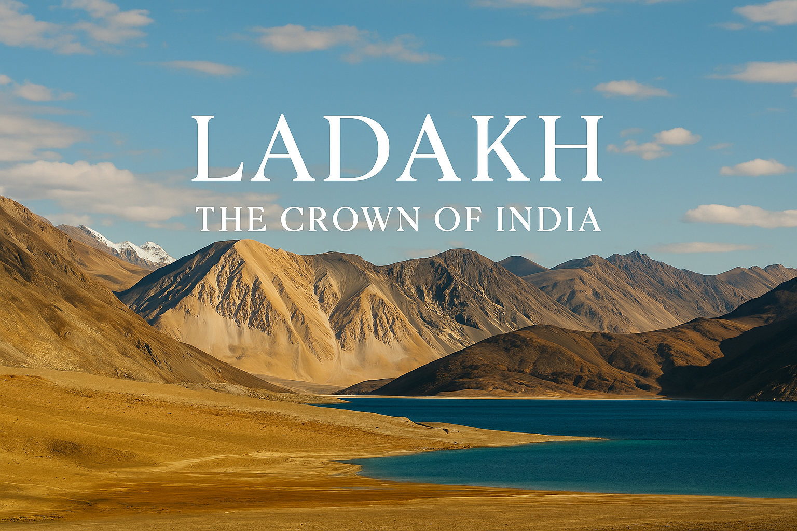
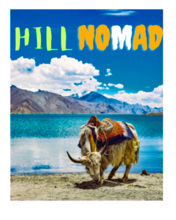
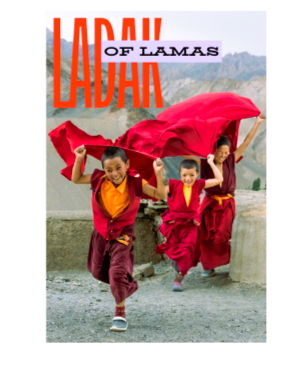
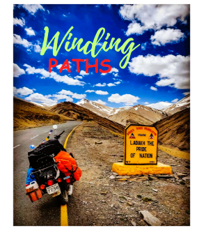
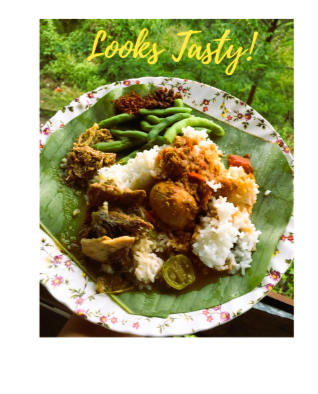

- Leh – Capital of Ladakh, known for stunning landscapes and monasteries.
- Pangong Lake – High-altitude lake famous for its shifting colors.
- Khardung La – One of the highest motorable roads.
- Nubra Valley – Sand dunes and double-humped camels.

- Monasteries – Hemis, Thiksey, and Diskit.
- Thukpa and Momos – Local cuisine must-tries.
- Hemis Festival – A vibrant cultural experience.
- Trekking – Explore the Himalayan beauty.

- Rafting in Zanskar River.
- Mountain biking on rugged terrain.
- Stargazing and camping in remote areas.
- Photography hotspots everywhere.

- Thukpa – Noodle soup for cold weather.
- Momos – Dumplings with veggies/meat.
- Butter Tea – Traditional salty tea.
- Skyu – Ladakhi wheat pasta dish.